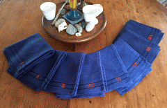
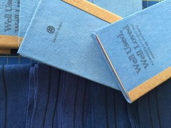

Today is June 15th. We are almost at the summer Solstice – my favorite time of year. The peas are up, lettuce needs thinning and I smell the freshly mowed grass. Ah-h-h-h!
Just a few newsy items – my work is at the George Marshall Gallery here in York until July 9th. The exhibit is Momentum XIV – honoring the recipient and finalists for the NH Charitable Foundation’s Artist Advancement award. I was one of two finalists.
I was artist in residence at the Longley school in Lewiston this month. I love this Mandala Community Weaving woven in red, white and blue – and covered with the hands who wove it (mostly immigrants from war torn countries). This image feel poignant considering what is going on in our country right now.
“Well Used, Well Loved” my current community art project is rolling along with a closed Facebook group where participants safely post responses to my prompts and questions. We also have a blog about the project - please check it out!
»
{kind=link}
{kind=link}
{kind=link}
“THANK YOU LETTERS” is an interactive community art project that I completed stitching in January of 2014 as I was heading off to India.
Here’s how it works - I ask people to think about something or someone or that they are thankful for. Then I ask them to spell it using an alphabet that I embroidered with cotton floss on lobster flags. Then I photograph the person with their word.
This project never really got the light it deserved. So now 2 years later I will travel with it to France – hoping that I can engage people with my elementary French!
Stay tuned for photos – check out my FB page and Instagram: sdhaskell and Twitter @sarahhaskell #thankyouletters
»
{kind=link}
{kind=link}
{kind=link}
{kind=link}
To create art with others – in community – requires interaction with others. It is in this space that the real community ART is made.
This spring I am continuing my transition from teaching in schools to focusing on my own art. Soon I will remove the artist in residence/teaching portion of my website. I will not be closing that door entirely as I will entertain special requests for the Mandala Community Weaving as well as other intergenerational projects.
In this new chapter of my creative life - I will put a greater weight on developing my own art work. It is here in my studio that I dig deep into my personal narrative. I have the good fortune this month of being in a show at the George Marshall Gallery in York, ME.
This month I worked with The Cotting School in Lexington to create a beautiful and expressive Community Mandala. In addition I traveled up to Lewsiton ME to work with 3rd and 4th grades at Martel School to create a joyful Mandala. My website gallery is long over due for some new art – so stay tuned – it is coming!
»
{kind=link}
{kind=link}
{kind=link}
{kind=link}
This winter my husband Ben retired from both of his jobs ~ University teaching and part-time ministry. To celebrate we went to the Bahamas for a whole month. We rented a little house on Long Island - part of the Lower Bahamas. The island is a little rough and rugged – having born the brunt of Hurricane Joaquin last fall. But the people were wonderful and the beaches were outstanding.
It was a fantastic month of swimming, reading, and yes -embroidery on my linens. I got two pieces finished and 7 books read!
Now I am back home, deep in to studio work, teaching a few residencies, dreaming about gardens (it’s very cold out!) and writing proposals for grants and fellowships.
Since I’ve been back I have been continuing to guide Well Used, Well Loved – the community art project I launched in January. Check out the blog link to learn more. In April I taught a Shifu paper spinning workshop so that the Paper Team could spin their words and images into thread. I am working on creating a Shifu tutorial for those project participants who are far away.
»
{kind=link}
{kind=link}
{kind=link}
Last week I was artist in residence at Jacob Hiatt Magnet School in Worcester, MA. I worked with 150 1st and 3rd graders to create a Community Mandala Weaving. This school community is rich with diversity and enthusiasm from principal Datta all the way down to the pre-K students, including all the staff and faculty. We worked hard for three days to create this magnificent, radiant Mandala which will adorn their school walls for generations to enjoy.
While I was at Jacob Hiatt School I was snowed in for one day – and enjoyed the time to catch up on other on-going projects – including Well Used, Well Loved This community art project has brought forth a deep engagement among many of the 43 participants. We have a (closed) Face Book group where we can safely share photos and words in response to my prompts and questions.
We also have a blog that is where I anonymously share stories and photo. Some of the questions I have asked are ~What/who in your life do you perceive as old? What/who do you perceive as beautiful? Do you see any connection between feeling attractive and feeling loved? The answers have been wide ranging – some surprises too!
Prompt #3 was -What connections do you see between being attractive/beautiful and being loved?
If I feel beautiful/attractive/appealing to others – will this mean I will be loved?
Here’s a quote from one of the project participants “I encourage everyone to ask young children and the men in your lives what their response was to writing prompt #3. My family’s responses were drastically different compared to my response. Tonight i realized that the passing of time, our society, and our own inner demons create our insecurities related to female beauty.”
»
{kind=link}
{kind=link}
{kind=link}
{kind=link}
The towels, journals and kozo papers for Well Used, Well Loved (community art project) have all been sent out. From London, England to the West coast (Washington and Oregon), from Arizona to Florida, from Brooklyn, NY to Corea Maine ~~ the towels, journals and paper have traveled far and wide.
These materials have reached across borders to link people with a common inquiry about beauty and age. More images to follow, more stories to be told.
»
{kind=link}
{kind=link}
Today I shipped all the towels and journals for the Linen Team for my latest community art project “Well Used, Well Loved”. Letting go is often the hardest part of creating and guiding a community project – but it is part of the process and what makes this journey into community art so rewarding.
In the next few days I will ship the packages to the Paper Team – the kozo paper for writing and spinning.
Be sure to check out the project blog !
»
{kind=link}
{kind=link}

The heart of “Well Used, Well Loved” (WUWL) is an inquiry into thoughts, feelings and reflections on age and beauty.
From its inception this community art project has had two legs – The Linen Team: which reflects on age and beauty through the use of a hand-woven linen towel and The Paper Team: which records personal reflections and conversations around age and beauty on Japanese Kozo paper that will eventually be spun into thread and woven in to a textile art work.
Today I contacted folks who expressed interest in this project – the two legs have come to life – and the project is taking off on its own journey!
»{kind=link}
Eight towels – ready to live large!

Well Used, Well Loved
A community art project that explores age and beauty
Will you consider joining me in this reflection on age and beauty?
I am seeking 8 individuals or households to “adopt” a hand-woven linen towel to use for six months. You will be asked to record periodic reflections and observations in a small journal that will be provided. Each site will be invited to have a “kitchen table conversation” with me at least once during the time period.
At the end of the six months, I will collect the used towel, exchanging it for a new towel as a thank you for participating in the project.
The eight Well Used and Well Loved towels will be the centerpiece for an installation grounded in an exploration of aging and beauty. The journals (or text from them) will also be a part of the final installation.
If you are interested I will ask you to sign a participation agreement. You will agree to use the towel, to communicate during the project’s 6 months, to write in a journal, to return the towel at the end of six months.
Please visit the project blog and my website for more info.
www.wellusedwellloved.blogspot.com
http://sarahhaskell.com
Please contact me if you are interested in participating in this project.
Thank you!
»{kind=link}
Well Used, Well Loved Journals
Happy beautiful New Year to all!
I LOVE the month of January – it is a time that feels unencumbered by holidays (apologies to MLK) and the weather often shuts down the frenzy of modern life. This is a time I hunker down in the studio, dig deep, inquire within and seek fresh solutions to old sticky habits. This fall has been particularly busy with my part time care-giving for my 94 year old mother. I am away from home and studio for two full days a week – thus portable art work is vital to my creative health.
My current portable project is titled “HELP”. It is a series of 4 panels of white hand-woven linen – actually a re-purposed piece from the 90′s. Each panel has a hand sign for a letter (H-E-L-P) and each panel has an illustration of one of the 4 elements ( fire, water, earth, air). The inspiration for this work grew from the emerging refugee crisis and the relationship of this crisis to climate change.
I’m still working on this project – but feel ready to share the first two letters – H and E.
On January 6th I will launch “Well Used, Well Loved” a community art project that explores age and beauty. I will put out a call to participate on that date – seeking 8 households (individuals or families). Check out the project blog to learn more!
May you all enjoy a healthy and happy year ahead!
»
{kind=link}
{kind=link}
{kind=link}